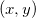
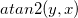
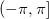
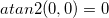

The atan2 function is a variation of the atan function. For a given coordinates ,  is the angle between the positive X axis and the point . The angle is positive for counter-clockwise angles (where ), and negative for clockwise angles (where ). The result angle range is , and for both x and y are zeroes, .
Returned values are in radians, degrees or gradians, depending upon the system.math.angularunits object property (which can also be set in the Options dialog box).
double Atan2(double y, double x)
y
x
Return the angle between the positive X axis and the point given by the coordinates .
atan2(4, 3) = ; // 0.92729521800161 atan2(0, -1) = ; // 3.1415926535898 atan2(0, 0) = ; // 0 atan2(-1, -1) = ; // -2.3561944901923